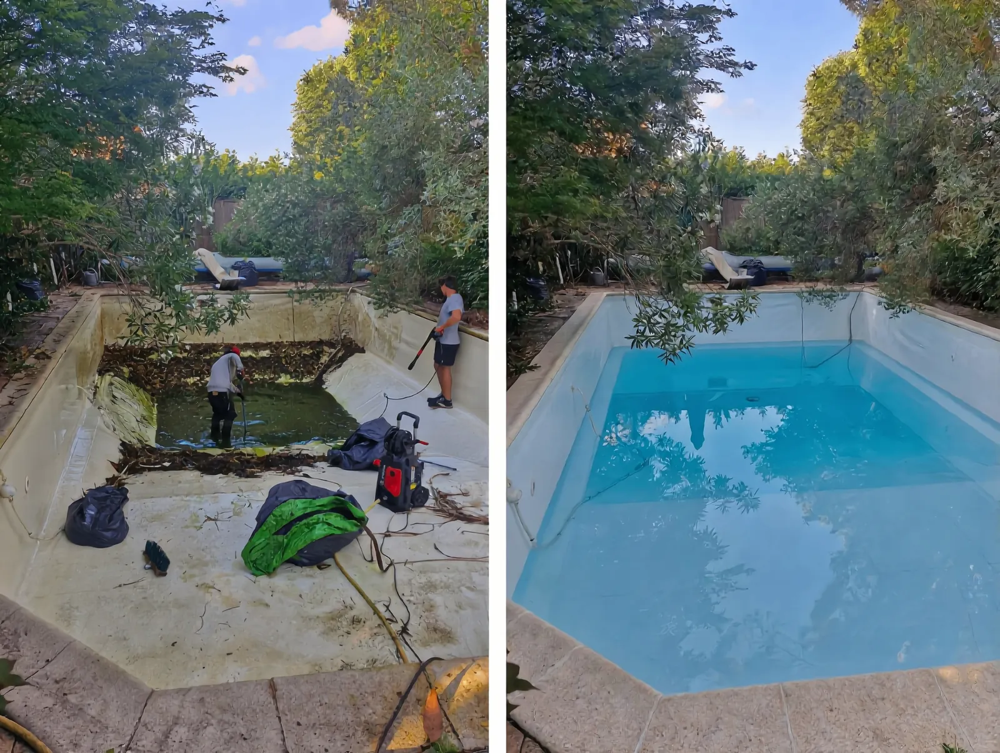
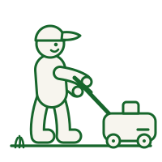

Nettoyage haute pression en Gironde
Terrasses, allées et murets retrouvent leur éclat d'origine.

Nettoyage haute pression
Le nettoyage haute pression est la solution la plus efficace pour redonner leur aspect d'origine à vos surfaces extérieures. Mousses, algues, taches et salissures incrustées disparaissent en quelques passages. Nous intervenons sur terrasses en bois ou béton, allées pavées, murets, clôtures et façades. Résultat immédiat et durable.
Ce qui est compris
- Élimination des mousses, algues et taches tenaces
- Traitement des terrasses bois, béton et pierre
- Nettoyage des allées, murets et clôtures
- Matériel professionnel haute performance
Aussi
Nos autres prestations
Entretien de jardins
Un suivi régulier pour un jardin toujours impeccable, saison après saison.
En savoir plus
Tonte de pelouse
Une pelouse dense, nette et parfaitement rasée à la fréquence idéale.
En savoir plusTaille de haies et arbustes
Des haies structurées et des arbustes en pleine santé, taillés avec précision.
En savoir plusZone d'intervention
Nous intervenons partout en Gironde
Bordeaux · Mérignac · Pessac · Talence · Bègles · Villenave-d'Ornon · Gradignan · Cestas · Canéjan · Le Haillan · Le Bouscat · Bruges · Eysines · Saint-Médard-en-Jalles · Léognan · Cadaujac · La Brède · Martillac · Créon · Libourne · Arcachon · Andernos-les-Bains, et l'ensemble des communes du département.
Contact
Demandez votre devis gratuit
Décrivez votre projet : nous vous répondons sous 24 h avec une estimation claire et sans engagement.
- 06 30 64 47 09
- jardindegironde@gmail.com
- Toute la Gironde
- Lun – Sam, 8 h – 19 h
Recevoir mon devis gratuit
Réponse sous 24 h ouvrées. Sans engagement.